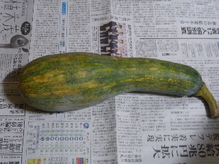
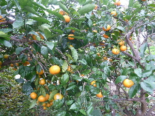
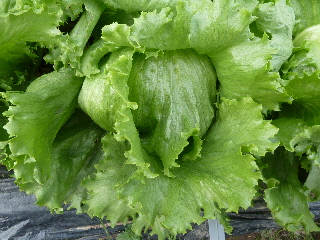
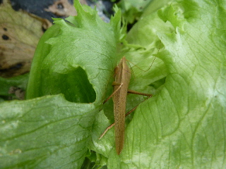
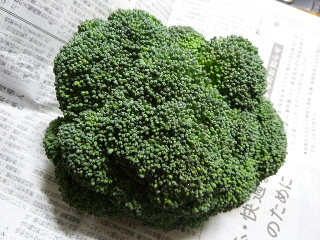

遊びで植物を育てよう
2014/11/02
じゃがいもの芽を欠きました。
じゃがいもから芽が出て来ました。

栄養をドンドンとられちゃうので、手でポリポリ芽を取り除きました。
じゃがいもの数が多いので一苦労でした。
【ページTOP】 【11月TOP】
【園芸TOP】
2014/11/02
ひょうたんのような形のカボチャを収穫しました。
これ流行ってるみたいですね。

美味しいといいなーって期待していました。
カボチャによって個体差があるとは思いますが、美味しかったです。
【ページTOP】 【11月TOP】
【園芸TOP】
2014/11/08
ミカンがいい色になりました。
ミカンが沢山出来ました。

でも家には柿が沢山あるので、そっち優先で食べています。
今は毎日柿を食べています。
柿で太りそうな気分です。
【ページTOP】 【11月TOP】
【園芸TOP】
2014/11/16
レタスが出来ました。
レタスが大きくなりました。

勢いよく成長しているので、葉っぱがとても綺麗で美味しそうです。

中からバッタが出て来ました。
こんなところに隠れてるんですね。
【ページTOP】 【11月TOP】
【園芸TOP】
2014/11/30
ブロッコリーの収獲が始まりました。
冬野菜が多く収穫できるようになりました。

ブロッコリーも収穫できるようになりました。
大根、ニンジン、白菜、キャベツ、水菜、春菊、株、ルッコラと食べるものがいっぱいです。
【ページTOP】 【11月TOP】
【園芸TOP】
過去の日記
【2013年11月の日記】
【2012年11月の日記】
【ページTOP】
【11月TOP】
【園芸TOP】
畑仕事じゃないよ。
【おいしいものを食べよう。】【たくさん寝よう。】
【ソロ活をしよう!】【季節感のあることをしよう。】【動画視聴はほどほどに。】【当サイトの全てのコンテンツは無断転載禁止です。】